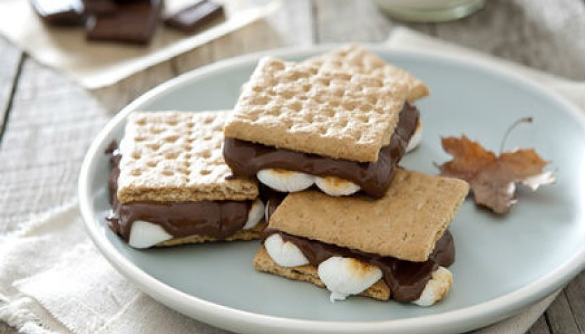

SMORES

Ingredientes
- Marshmallow 1 pacote
- Biscoito de Aveia 1 pacote
- Chocolate ao leite 1 tablete
Modo de preparo
- Aqueça o marshmallow sobre uma chama aberta até começar a dourar e derreter, não aproxime muito da chama pois ele pode queimar.
- Com os biscoitos, faça tipo um sanduíche colocando o chocolate e o marshmallow quente entre os biscoitos.
- Deixe o marshmallow esfriar um pouco antes de comer.